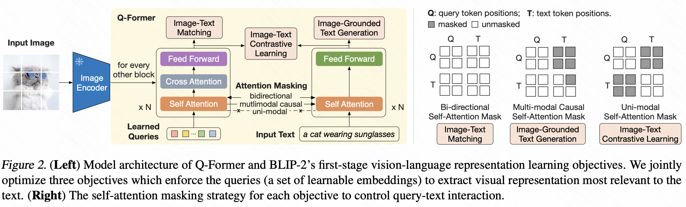
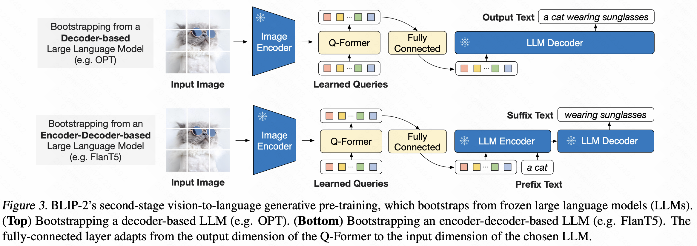
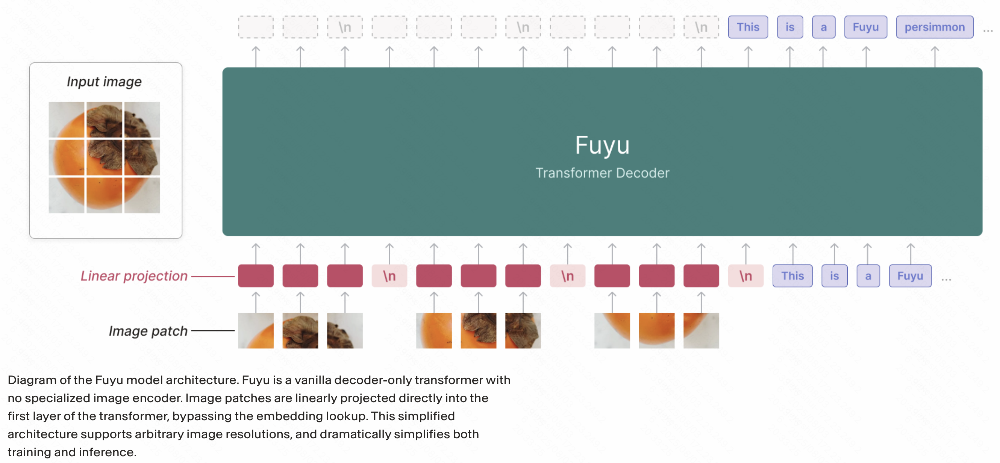
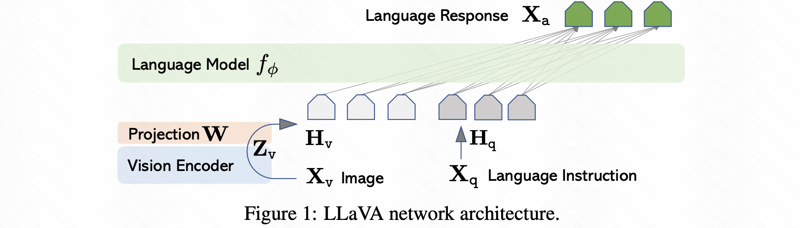
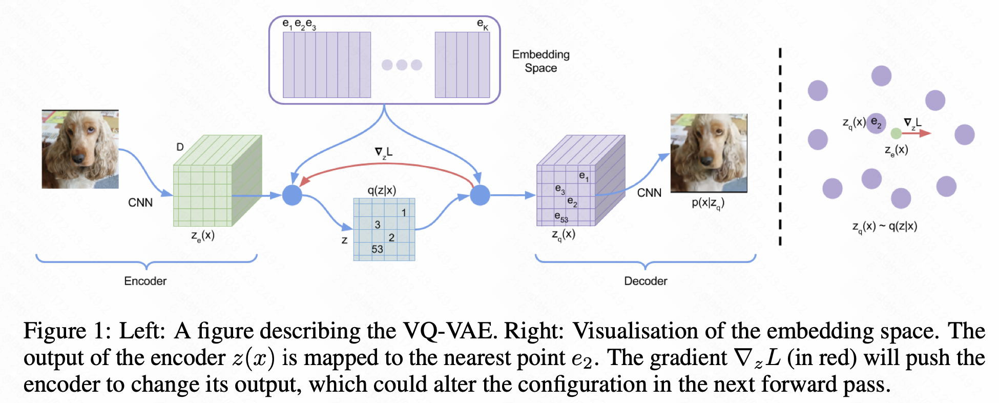
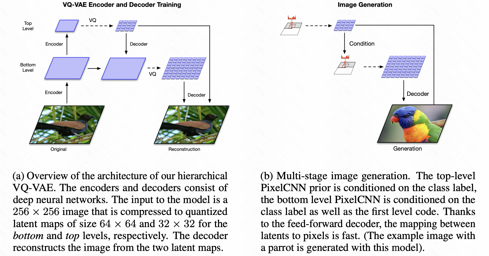
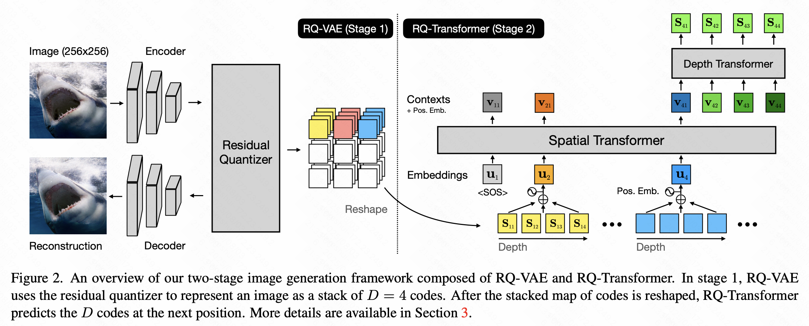
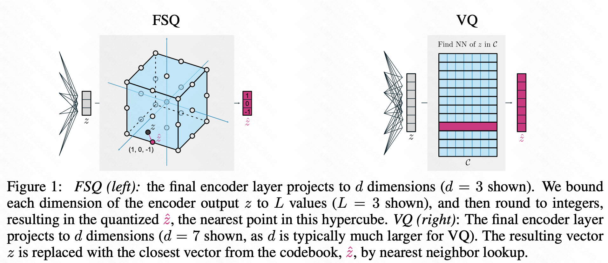
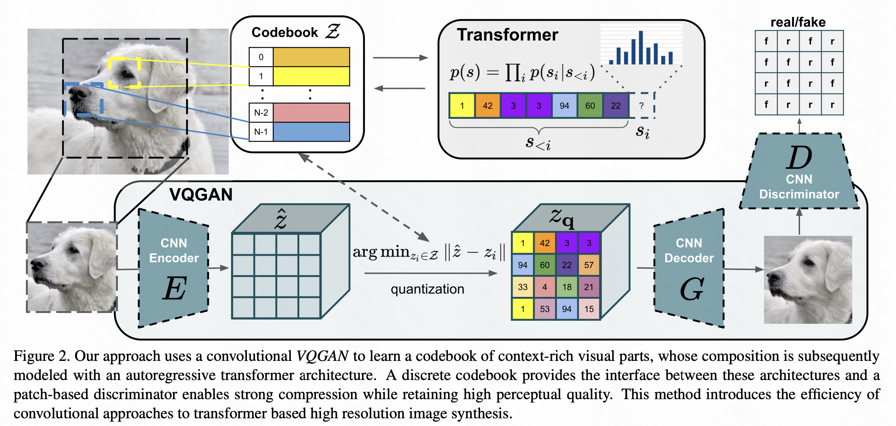

LLM —— Tokenize
词元化技术简介
词元化（Tokenization）设计的目的是将原始文本分割为模型可识别的词元序列作为大语言模型的输入。传统基于词汇的分词（如中文分词）存在结果不一致性，比如某些中文分词中相同的输入可能产生不同的分词结果，导致词表庞大且含大量低频词，还可能面临未登录词（OOV）问题。分词器的设计需要注意以下几点：
- 具备无损重构特性：分词结果必须能准确还原原始文本。
- 高压缩率（Compression Ratio）：分词处理后词元数越少越好。压缩比计算公式为$$\text{压缩率} = \frac{\text{原始文本UTF-8字节数}}{\text{分词后的词元数}}$$
- 领域适配性：需要适实际需求。比如通用分词器（如GPT-2）对多语言/多领域语料效果差（如LLaMA处理中文效率低）；通用BPE可能错误分割数字（如
7,481 → [7, 481]），需设计数字专用分词规则。
现有分词方法如字符级分词（如ELMo）以单个字符为最小单位。主流的LLM分词方法子词分词（Subword Tokenization）平衡了词表大小与OOV问题。具体实现时可以使用分词工具库SentencePiece（支持 BPE/ULM 算法），无需预分词直接处理原始文本，且可以统一处理多语言数据。下面介绍三种主流的子词分词方法。
LLM主流子词分词方法
BPE分词（Byte Pair Encoding）
1994年用于数据压缩，后适配至NLP领域。BPE初始化一个包含所有字符（如字母、边界符）的基础词表，然后统计相邻词元对的共现频率，迭代合并最高频词元对（如 ("o", "o") → "oo"），直至达到预设词表大小。Hugging Face中BPE的代码关键函数包括：
extract_frequencies()：统计词频。frequency_of_pairs()：计算词元对频率。merge_vocab()：合并词元对并更新词表。
一种BPE的拓展是字节级BPE（Byte-level BPE），基础单位为字节（基本词表大小=256）。这种方法解决了OOV问题，支持细粒度分割（如GPT-2、BART、LLaMA采用）。注意需要用Unicode标准化（如NFKC）预处理语料，避免特殊字符重复编码。
WordPiece分词
WordPiece是谷歌内部算法，2018年被BERT采用。与BPE的区别是 1采用了不同的合并标准，训练一个language model对词元评分，然后选择使训练数据似然性最大化的词元对；2采用了不同的评分公式，不是选择最频繁的词对，WordPiece评分公式为： $$\text{得分} = \frac{\text{词对频率}}{\text{第一个词频率} \times \text{第二个词频率}}$$
Unigram分词
Unigram整体流程是相反的，从大初始词表开始迭代删除词元直至目标大小。基于一元语言模型评估删除词元对语料似然的影响。采用期望最大化（EM）算法：E步用动态规划算法维特比算法找最优分词，M步更新一元词概率，重复直至词表收敛。T5、mBART、ALBERT都使用了这种分词方式。
VLLM分词技术简介
在视觉大语言模型（Vision-Language Large Models, VLLMs）中，Tokenization 需同时处理文本和视觉输入，VLLM 的分词流程分为三部分：
- 文本分词（Text Tokenization）：沿用传统LLM分词技术，但需与视觉Token协同。子词分词主流方案包括BPE（GPT-4V, LLaVA和SentencePiece（PaLM-E, Gemini）。需要添加一些特殊Token如图像标记符
<image>[IMG]和区域描述符<region_1><bbox>等。词汇表大小通常为 32K-128K。 - 图像分词（Image Tokenization）：将连续像素转换为离散Token序列，分为基于神经网络的特征提取器（如ViT patch embedding）和离散化表示学习（如VQ-VAE）两种类型。
- 跨模态对齐（Cross-modal Alignment）：将文本Token与图像Token融合为统一表示。
图像分词方法
基于神经网络的特征提取器
| 方法 | 原理 | 特点与模型示例 |
|---|---|---|
| ViT Patch embedding | 将图像分割为固定大小patch线性投影为Token | • 序列长度：$H/16 \times W/16$ • 代表模型：Flamingo patch为 16×16, LLaVA patch为14×14, BLIP-2 |
| CNN 特征图 | 用ResNet等CNN提取多层特征图，展平为Token序列 | • 保留空间层次结构 • 代表模型：BLIP, VinVL |
| 多尺度特征 | 融合不同层级的CNN特征（如Faster R-CNN），生成区域级Token | • 适合目标检测任务 • 代表模型：VL-T5, OFA |
目前主流的VLLM的视觉Tokenize方法是ViT patch embedding。这里介绍3篇经典VLLM论文：
BLIP-2: Bootstrapping Language-Image Pre-training (ICML 2023) BLIP-2两阶段预训练框架：使用预训练的Image Encoder（CLIP训练的ViT-L/14和EVA-CLIP训练的ViT-g/14）提取图像视觉特征，Q-Former（Querying Transformer）通过Learnable Queries 跨注意力机制从冻结的ViT中提取文本最相关的视觉表示，最后使用冻结的LLM（Decoder-based和Encoder-Decoder-based）生成文本。
Fuyu-8B: A Multimodal Architecture for AI Agents(Adept AI, 2023) Fuyu8B极简架构：取消视觉Encoder，直接线性投影图像patch，图像Token与文本Token并行输入标准的仅Decoder Transformer架构。
LLaVA: Large Language and Vision Assistant (NeurIPS 2023) 使用一个简单的线性层将预训练CLIP视觉Encoder ViT-L/14特征映射为embedding，与语言指令的embedding共同输入LLM（Vicuna）得到最终的输出。关于LLaVA系列模型解读可以看【知乎】LLaVA系列多模态大模型总结

离散化表示学习
| 方法 | 原理 | 特点与模型示例 |
|---|---|---|
| VQ-VAE | 学习一个离散码本（Codebook），将图像块映射到最近邻的离散码向量 | • 生成压缩Token（如8×8→1 Token） • 代表模型：DALL-E码本大小为 8192, Parti码本大小为16384 |
| VQ-GAN | 改进VQ-VAE，用GAN提升重建质量，生成更精细的视觉Token | • 支持高分辨率图像 • 代表模型：CogView, NÜWA |
| Masked Token建模 | 随机掩盖部分图像Token，训练模型重建（类似BERT的MLM） | • 提升表征鲁棒性 • 代表模型：BEiT, PeCo |
图像的Tokenize基础框架从VQ-VAE开始，发展出一系列提升重建质量和分辨率的扩展架构包括VQ-VAE2、RQ-VAE和FSQ等，同时也发展出生成式对抗化的形式。
- VAE（Variational Autoencoder）：学习连续潜空间 $z \sim \mathcal{N}(\mu, \sigma^2)$，编码器 $q_\phi(z|x)$ 与解码器 $p_\theta(x|z)$，但是连续向量不适配Transformer的离散自回归生成。
- VQ-VAE（Vector Quantized VAE）：将隐变量$z$量化为可学习的码本 $\mathcal{C} = {e_1, e_2, …, e_K} \in \mathbb{R}^{K \times D}$，离散索引 $k = \text{argmin}_i | z_e - e_i |_2$。训练目标为$\mathcal{L} = |x - \hat{x}|^2 + | \text{sg}[z_e] - e_k |_2^2 + \beta | z_e - \text{sg}[e_k] |_2^2$（sg：梯度停止操作，$\beta$ 通常取0.25）。VQ-VAE生成 256x256 图像仅需 32x32=1024 Token（压缩率64倍），可适配Transformer自回归生成。 
- VQ-VAE2：设计了层级结构，底层编码局部纹理，高层编码全局结构。高低层共享同一码本（$K=8192$）。首次实现了 1024x1024 高保真图像生成（BigGAN级质量）。 
- RQ-VAE（Recurrent Quantized VAE）：使用递归量化，即将单次VQ迭代扩展为多步残差量化$
z^{(0)} = E(x), \quad r^{(t)} = z^{(t-1)} - q(z^{(t-1)}), \quad z^{(t)} = E_r(r^{(t)})$。这样设计后码本利用率提升 3倍（相同重建质量下码本减小） - FSQ（Finite Scalar Quantization）：直接量化潜向量为整数：$z_q = \text{round}(z_e / \Delta) \cdot \Delta$，码本隐含在量化步长 $\Delta$ 中。无需码本搜索，训练速度 快2.5倍，且支持任意维度离散化。$ \mathcal{L}_{FSQ} = | x - G(z_q) |^2 + \lambda | z_e - z_q |^2 $ 
- VQ-GAN：将VQ-VAE解码器升级为GAN，实现了重建的高频细节保留。相对VQ-VAE的像素级MSE损失，VQ-GAN引入Patch判别器 $D$ 和感知损失，目标函数为$ L_{VQGAN} = L_{VQ}+\lambda_{GAN} L_{GAN}+\lambda_{Percep} L_{Percep}$。VQ-VAE的码本更新仅使用了L2损失，VQ-GAN使用对抗梯度驱动。 
关于离散化表示学习的相关知识可以看：
两种方法对比
| 维度 | 基于神经网络的特征提取器 | 离散化表示学习 |
|---|---|---|
| 核心思想 | 通过神经网络提取连续特征向量，输出高维浮点数向量（连续空间） | 将图像映射到离散码本的索引，输出整数索引序列（离散空间） |
| 信息保留能力 | 细节保留依赖网络参数量，高层语义和位置编码明确 | 量化损失细节，语义信息需要解码器重建，空间关系模糊 |
| 多模态协同能力 | 和文本融合天然适配（拼接或cross attention），需额外设计生成头适配跨模态生成 | 与文本融合需投影到连续空间，可直接复用语言模型解码 |
| 计算效率 | 编码速度适中，无需解码，序列一般较长 | 码本近邻搜索导致编码较慢，且需要解码器生成 |
| 训练稳定性 | 梯度稳定，端到端可微 | 码本更新存在梯度截断问题 |
| 适用场景 | 连续向量保留丰富语义信息，适用于图像描述生成、VQA等语义理解任务 | 因离散Token天然适配语言模型架构，适用自回归生成式预测和文生图、图像编辑等图像生成任务。VQ-VAE的序列压缩技术可用于将推荐广告领域中广告离散化为一串索引表示。 |
跨模态对齐策略
在进入LLM时代之前，ViLT的paper中总结了多模态的框架如下（多模态论文总结详见之前的笔记Papers Summary）。关于VLLM中的跨模态对齐策略后续会详细学习。